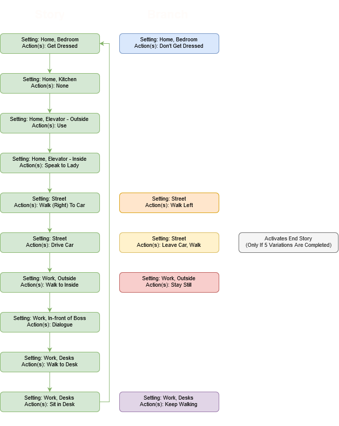

Interaction - Played through "Every Day the Same Dream"
1. How does the allowed interaction keep the narrative on track? How does it permit variations and branches?
It keeps the narrative on track by allowing the player to experiment on what happens with the world. In the real world, every day may have a similar routine but interactions allow us to create variations or branches of our everyday routine. - In the game it permits variations with how we view what the character has to do. (For example, when we chose to go to work semi-naked the storyline changes and the employee is fired on the spot)
2. Describe the nature of the graphical quality and how it is relevant to the story.
The colour tones throughout the game are very monochrome, with flashes of colour every now and then. Similar to the first question, this invokes variation/branches in life - small changes like elevator lights, tv screens, etc create the atmosphere on simplistic and repititive motion. - Objects and the overall art direction are simplistic consisting of basic shapes and patterns to form the environment. Each element, visual and auditory provokes a monotonous environment. These elements are relevant to the story as the story itself is repititve whith little variations included.
3. Describe the nature of the interaction and how it influences choices and how the player feels.
Because the controls are very simple (left/right arrow keys, and the spacebar) the interactions are very limited to what can occur. Interactions can involve little things like turning off/on certain objects, to dialogue, or even getting in and out of the car. As well they don't have to be control activated - Some interactions, for example waiting for the leaf to fall, does not require the 'spacebar' key to activate. This invokves emotion in the player as those interactions are relatable to what can happen in the real world. The game creates a sense of connection with the player by envoking certain actions.

The main story (shown in green) loops unless a branch action is taken.
The blue branch creates a sub-story. If the player chooses not to get dressed then when the player arrives at work and the boss will imediately fire the employee and the story will restart.
The orange branch creates a sub-story. If the player choses not to walk right to his car and walks left instead, they are greeted by a man in dark who says they can take them to a quiet place - he takes you a graveyard then the story restarts.
The yellow branch creates a sub-story. If the player choses to exit his car and walk towards either side of the screen they will arrive in a field with a cow. The player can go back to his car and the story does not restart.
The red branch creates a sub-story. If the player choses to wait outside of work instead of immediately walking in, they will notice that a leaf will begin to fall off the branch of a tree and the player can interact with the said leaf and observe it. This does not reset the story, so the player can still go inside work.
The purple branch creates a sub-story. If the player choses to walk past his desk and go to the roof instead, they will be greeted with an action to "jump" off the buildling. If "jump" is chosen then an animation of the player jumping off plays and the story restarts.
Once all branches have been played once the main story goes to the end result. The story is played again but key features are removed. The wife is gone, no one is on the drive to work, the man is gone, the cow is gone, the elevator lady is gone, no one is at work, and if you walk all the way to roof again another person is seen jumping off. Then the story ends.
Some observations: As the player progresses through the game and activates branches, the graph behind the boss updates and shows work efficiency going down, and the elevator lady will decrease the amount of steps to become a new person. (Her dialogue: "N more steps and you will become a new person" (N = 5,4,3,2,1)